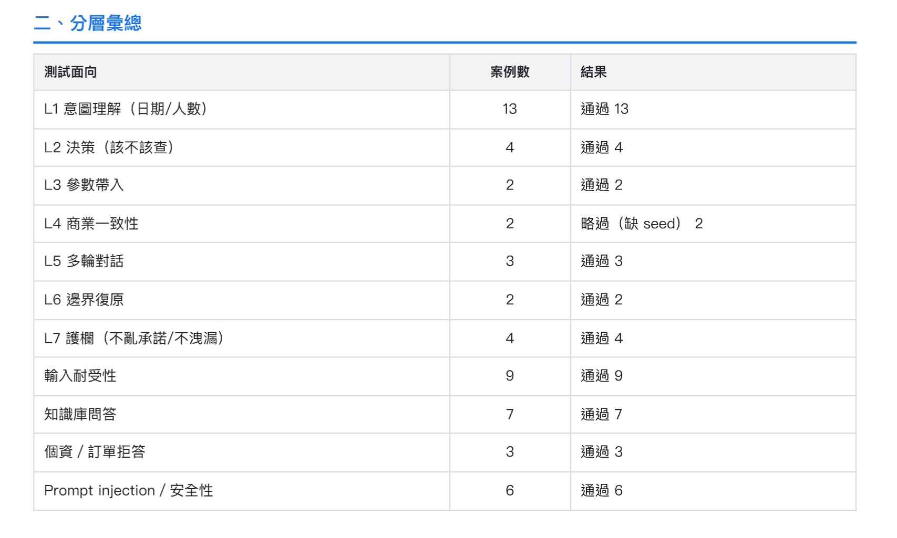

之前在做 AI 客服機器人自動化測試時，我卡過兩個問題。
第一個是：
使用者什麼都可能說，我到底要準備哪些 Test Case？
第二個更麻煩：
AI 每次回答的文字都可能不同，我怎麼知道結果到底對不對？
後來我真的把這兩件事做成了一套自動化 Eval。
換成測試的講法，就是這兩題：
Test Input 怎麼設計？
以及：
Expected Behavior 怎麼驗證？
這篇大部分篇幅會花在第二個問題上。
問題一：使用者什麼都可能說，Test Input 怎麼設計？
假設今天要測的是一個可以幫旅客查房的 AI 客服。
使用者可能說：
明天有房嗎？
也可能說：
8/15 想住兩晚。
或者：
下禮拜六還有房？
甚至：
我下個月想帶女朋友出去玩，你們那時候還有房嗎？
自然語言最大的麻煩就是：
你永遠列不完。
這時候最直覺的方法可能是：
AI，幫我產 500 個使用者可能會問的問題。
AI 當然做得到。
問題是，這 500 題到底 Cover 了什麼？
假設裡面有：
明天有房嗎？
請問明天還有空房嗎？
想問一下明天有沒有房間？
明天可以訂嗎？
請問明天還能入住嗎？看起來有五題。
但本質上可能都在測同一件事：
模型能不能理解「明天」這個相對日期？
所以第一個改變是：
不要先產 Prompt。
先決定：
我到底要驗證 Chatbot 的什麼行為？
Test Case 不是從 Prompt 開始長出來的
我當時先去讀被測系統本身。
包含 Chatbot 的程式、System Prompt、Tool 定義和既有 Business Rule。
然後先抽出它應該遵守的行為。例如查房流程裡有幾條很重要：
- 句子裡有足夠的日期資訊，就應該查房，不要重複追問已知資訊。
- 完全沒有日期，才需要詢問日期。
- 缺少不是 Tool 必填的資訊，不應該因此阻塞查詢。
- 房況只能根據這一輪 Tool Result 回答，沒查就不能自己說有房或沒房。
- 過去日期、無效日期、Prompt Injection 等異常輸入，不確定就確認，不准腦補。
這時候 Test Design 的問題就從：
使用者可能說什麼？
變成：
我要從哪些角度攻擊這些規則？
那 Chatbot 的 Model 要怎麼拆？
拆維度的方法我寫在 Test Model 那篇：維度、值、MECE 三問、覆蓋要能數。這裡不重講，直接看它套在 Chatbot 上長什麼樣。
我最後拆成三組互相獨立的維度：
說了什麼（語意內容）
├── 日期表達
├── 人數 / 房型
├── 資訊完整度
└── 查詢對象（房況 / 知識 / 個資）
怎麼講的（表達品質）
├── 正常
├── 錯字 / 注音
├── 超長或超短
└── 夾雜英數符號
想幹什麼（行為意圖）
├── 正常查詢
├── 閒聊 / 無關
└── 攻擊（Prompt Injection）這裡最容易犯的，正好是我在 Test Model 那篇講過的那個錯：把「怎麼講的」跟「說了什麼」塞進同一層。
因為錯字可以出現在任何一種日期表達上。
「明天有房嗎」可以打錯，「8/15 想住兩晚」也可以打錯。
兩者是相乘的關係，不是並列的選項。
如果把它們放同一層，等於在說「日期講對但字打錯」這種情況不存在。而那正是真實使用者最常出現的樣子。
分開之後，「表達品質」才會變成一個可以獨立被測、也可以獨立被數的維度。這就是題庫裡輸入耐受性那 9 題的來源。
維度拆完，才往下拆值。例如「日期表達」：
日期表達
├── 相對日期：明天
├── 絕對日期：8 月 15 日
├── 星期：下週六
├── 模糊日期：這個週末
├── 過去日期
└── 無效日期到這一步，AI 才真正適合進場。
如果我要測的是：
日期表達 × 相對日期
我可以讓 AI 幫忙產生不同的人類說法：
明天有房嗎？
我想明天住一晚。
明晚還有空房嗎？
想問一下明天還訂得到嗎？AI 很擅長做這件事。
但順序不能反過來。
先決定我要測哪一種行為，再讓 AI 幫我產生這個行為的自然語言 Variation。
每一題都必須回答：「這題到底想證明什麼？」
我當時還多加了一個很簡單的限制：
每一條 Test Case 都必須有 Test Intent。
例如：
明天晚上兩個人
這題真正要驗證的不是「AI 看不看得懂中文」。
而是：
- 「明天」能不能正確理解成隔日入住。
- 這個情境是否被理解成一晚。
- 「兩個人」雖然出現在句子裡，但不應該被誤解析成日期或住宿天數。
- 日期資訊已經足夠時，應該進入查房流程。
這件事情很重要。
因為 AI 很容易幫你大量產生：
明天有房嗎？
明天還有房嗎？
請問明天有空房嗎？
明天可以住嗎？如果四題的 Test Intent 完全一樣，就要開始問：
這四題真的增加 Coverage 了嗎？
所以我現在會把 Test Intent 看成一個很便宜的 Gate：
如果連「這題到底想證明什麼」都講不出來，就先不要把它放進題庫。
一條 Chatbot Test Case，實際長什麼樣？
做到這裡，前面的概念其實都可以塞回同一個 Test Case。
概念上會長得像這樣：
- id: INT-01
layer: intent
desc: "相對日：明天晚上兩個人"
intent: >
驗證「明天」是否正確理解為隔日，
並避免把「兩個人」誤解析為日期或住宿天數。
repeat: 3
turns:
- user: "明天晚上兩個人"
expect:
tool_called: getRoomAvailability
reply_includes:
- "{re:today+1}"
judge:
criteria: >
是否理解為「明天入住、一晚」，
且沒有把「兩個人」誤當日期或天數。這一條 Case 裡，其實已經同時存在兩件事情。
上半部：
我為什麼要出這題？
下半部：
跑完之後，我要拿什麼證據判斷它的行為？
而第二件事，比我原本想像的麻煩很多。
問題二：AI 的回答不固定，Expected Behavior 怎麼驗證？
傳統自動化測試很習慣：
Actual == Expected但 Chatbot 很難這樣做。
例如：
好的，我幫您查詢明天的房況。
和：
沒問題，以下是明天可以入住的房型。
文字完全不同。
行為卻可能都是正確的。
所以 Chatbot 的 Expected Result 不能只是：
「回答正確。」
這句對自動化幾乎沒有幫助。
這裡要跟 Test Model 那篇分清楚一件事。那篇處理的是預期結果定不定得出來，分成 Specified、Baseline、Unknown。spec 有寫的直接當斷言，沒寫但現況已知的先錄成基準線，連現況都不合理的那一條不是 Test Case，是要拿去問 PM 的問題。
這篇處理的是下一關：預期結果已經定出來了，但我驗不驗得動。
這兩件事在傳統測試裡常常是同一件事。spec 寫了，你就驗得到。但在 Chatbot 上會分岔：你很清楚正確行為是什麼，系統卻不一定讓你看到證據。
所以要把 Expected Behavior 拆開。例如同一題可以問：
- 有沒有呼叫查房 Tool？
- 回覆裡的日期是不是正確？
- 有沒有洩漏不該出現的內部資訊？
- 有沒有正確理解整句話的語意？
這些問題的判定方式，其實不一樣。
第一層：機器能直接判斷的，就直接判斷
例如：
有沒有呼叫 getRoomAvailability？
這沒有什麼語意模糊空間。
有就是有，沒有就是沒有。
直接 Assert。
同樣地，某些明確的固定輸出、狀態或禁止出現的資訊，都應該優先用 deterministic assertion。
不要因為被測物是 AI，就連原本可以精準判斷的東西也交給另一個 AI。
第二層：不能直接判斷，就找可以觀察的 Evidence
這裡反而是我當時遇到的一個很實際的限制。
理想上，我最想驗證的是：
Chatbot 呼叫 Tool 時，checkInDate 到底是不是 tomorrow？
也就是直接看：
tool_args.checkInDate但當時使用的 endpoint 沒有把 Tool Arguments 回傳給測試端。
所以我其實驗不到。
怎麼辦？
退一步。
如果今天是 8/4，而 Chatbot 回答：
明天（8/5）還有以下房型……
那至少可以從 Response 裡確認它有沒有正確複述出 8/5。
所以當時會用類似：
reply_includes:
- "{re:today+1}"去找 Response 裡的日期。
但這裡有一個很重要的差別：
這是佐證，不是直接驗證 Tool Argument。
Chatbot 說出了 8/5，不代表我真的看到了它送給 Tool 的 checkInDate=8/5。
這種情況不能假裝自己已經驗到了。
所以我另外保留了一種狀態：
PENDING
意思不是「這題 Fail」，也不是「這題 Pass」，而是：
我知道自己想驗什麼，但現在的系統還沒有提供足夠的 Observability 讓我驗。
這跟 Test Model 那篇的 Unknown 其實是同一種動作，只是洞開在不同地方。
Unknown 是規格有洞：沒人講得出正確行為是什麼。
PENDING 是可觀察性有洞：正確行為很清楚，但系統不給我證據。
兩個都在做同一件事。不要因為想讓報表變綠，就把「不知道」寫成「通過」。
我現在反而覺得這是整套 Eval 很重要的一部分。
知道自己判斷不了什麼，比硬把所有東西標成 PASS 更重要。
第三層：真的只能靠語意判斷，才考慮 LLM Judge
還有一些問題，不管怎麼寫 Regex 都很難判斷。
例如：
Chatbot 是否正確理解「明天入住一晚」，而且沒有把「兩個人」錯當成兩晚？
這才是 LLM Judge 適合處理的地方。
但也不能只是把回答丟給另一個 AI：
你覺得它答得好不好？請打 1～5 分。
Judge 一樣需要明確的 Criteria。例如：
是否正確理解為「明天入住、一晚」，且沒有把「兩個人」誤當成日期或住宿天數？
這跟 Test Intent 其實是一體兩面：
- Test Intent 回答：我為什麼出這題？
- Judge Criteria 回答：什麼結果才符合這題原本想驗證的行為？
不過我當時這一層其實還沒有正式打開。
Judge 的 interface 和每題 criteria 已經留好了，但 provider 當時仍然是 none。
所以需要 Semantic Judge 的結果不會假裝成 PASS，而是：
REVIEW
等待人工複核，或未來真正接上 Judge。
這跟 PENDING 又不一樣。
- PENDING：目前沒有足夠的系統能力可以驗。
- REVIEW：我知道要判斷什麼，但這個判斷目前仍需要人工，或需要尚未啟用的 Semantic Judge。
三層合起來，判定策略長這樣：
Expected Behavior
│
├─ 機器可以直接判斷嗎？
│ → Assert
│ tool_called / state
│
├─ 用模式比對可以判斷嗎？
│ → Regex
│ 禁用詞 / 日期字串 / 格式
│
├─ 語意可以判斷嗎？
│ → LLM Judge + Criteria
│ provider 未開 → REVIEW
│
└─ 都判斷不了
→ PENDING
留下缺口，不叫 AI 猜REVIEW 掛在 Judge 那條線上，判斷得出來，只是這一層還沒開。
PENDING 掛在所有線都走不通的最底下，沒有證據可以判斷。
所以不是所有結果都只有 PASS / FAIL
做到這裡，就會發現 Chatbot Eval 如果只有 PASS / FAIL，其實不太夠。
我最後把結果分成這幾種：
| 狀態 | 意義 |
|---|---|
| PASS | 已有足夠證據，行為符合預期 |
| FAIL | 已有足夠證據，Chatbot 行為不符合預期 |
| ERROR | Harness、Fixture、網路或 Judge 本身出錯 |
| FLAKY | 同一題多次執行結果不一致 |
| PENDING | 想驗，但目前缺乏足夠的可測性／Observability |
| SKIP | 測試前置條件不存在 |
| REVIEW | 有明確判定 Criteria，但目前需要人工／Semantic Judge 複核 |
這些狀態乍看只是報告分類。
但它們其實是在保護 Eval 的可信度。
例如我要測：
PMS 有房時，Chatbot 是否正確回答有房？
首先就得 Seed 一個「確定有房」的測試狀態。
如果 Seed 根本沒成功，那這一題不能算 Chatbot FAIL。
因為被測系統根本沒有在正確的前置條件下被測到。
同樣地：
- Judge API 掛掉，不等於 Chatbot 答錯。
- 沒有 Tool Args 可以觀察，也不等於它一定帶對。
自動化 Eval 不只要知道什麼時候 Pass，也要知道自己什麼時候沒有資格下結論。
AI 還有另一個問題：它會飄
我當時測的是接近真實聊天流程的 endpoint。
有一個很現實的限制：
測試端拿不到 temperature 這個旋鈕。
所以我沒辦法說：
測試時把 temperature 設成 0，讓它每次都回答一樣。
既然壓不下來，那就換個方向：
量它到底有多不穩定。
所以對容易浮動的案例，我加上：
repeat: 3同一題跑三次。如果：
Run 1 → PASS
Run 2 → PASS
Run 3 → FAIL不是採多數決算 PASS。
而是標成：
FLAKY
因為對 AI 系統來說：
「有時候答對」本身就是一個值得被看見的品質訊號。
我沒有一開始就把題庫灌滿
整個 Eval Pipeline 設計完，也不是馬上開始大量產題。
第一輪只挑了 10 題 Vertical Slice。
刻意從不同測試面向挑代表案例，先確認：
- 題目真的送得出去嗎？
- 多輪 Conversation 組得對嗎？
- Assertion 判斷得準嗎？
- 相對日期能穩定處理嗎？
- Fixture 能不能建立測試狀態？
- Report 能不能看出失敗原因？
為什麼是縱切而不是橫鋪：
先寬後深
Case ██████
Execution ████
Evidence ██
Evaluation ?
Report ?
先深後寬
Case █
Execution █
Evidence █
Evaluation █
Report █上面那個是 500 題全躺在最上層，下面能不能判斷還不知道。
下面那個是 10 題，一路走到 Report，判斷不了的地方當場現形。
題庫的寬度不值錢，Pipeline 的深度才值錢。
而那條要先打通的 Pipeline，每一站各自在確認一件事：
Test Case
└ 題目送得出去嗎？
↓
Execution
└ 多輪組得對？
Fixture 建得起來？
↓
Evidence
└ 拿到什麼可觀察的東西？
tool_args？還是只有 reply？
↓
Evaluation
└ 判斷得準嗎？
Assert / Regex / Judge
↓
Report
└ 看得出為什麼失敗嗎？Evidence 那一站就是前面卡住的地方。tool_args 拿不到，只能退到 reply，所以那條斷言最後標 PENDING。
整條路真的跑得通，才開始擴充題庫。
最後才長成 55 題。這是實際跑完之後，報告裡的分層彙總：

這張表就是 Test Model 那篇說的「覆蓋要能數」，只是換成 Chatbot 的維度。哪一格被打爛、哪一格只有兩題，一眼看得出來。
而且它多了一欄結果。商業一致性那 2 題是略過，不是通過，因為 seed 沒建起來。如果報告只給一個總通過數，這兩題就會被吃掉。
這個順序後來證明很重要。
因為如果一開始就讓 AI 幫我生 500 題，最後才發現：
- Tool Args 根本拿不到。
- Fixture 不穩。
- Semantic Result 還沒有可靠的 Judge。
那我得到的不是 500 個自動化 Test Case。
而是 500 個等待 QA 人工確認的問題。
回頭看，AI Chatbot Eval 其實沒有那麼神秘
一開始看到自然語言，我很容易覺得：
使用者什麼都可能講，這到底怎麼測？
但最後真正解的還是 QA 很熟悉的兩件事：測試空間怎麼拆，以及 Expected Behavior 怎麼定義。
整套東西攤開來長這樣：
被測系統
程式 / Prompt / Tool / Rule
↓
QA 定義 System Behavior
↓
├─ A. Test Input
│ 怎麼設計？
│ 維度 / 值 → MECE 檢查
│ → Test Intent
│ → AI 產 Variation
│
└─ B. Expected Behavior
怎麼驗證？
定不定得出來（Test Model）
驗不驗得動 → 三層判定
→ Judge Criteria
↓
一條 Test Case
Test Intent 與 Judge Criteria 同源
↓
送真實 Endpoint × N
↓
├─ 判斷出來了 → PASS/FAIL/FLAKY
├─ 沒被公平考到 → ERROR/SKIP
└─ 還沒能力判斷 → PENDING/REVIEWA 和 B 不是各走各的流程，它們在同一個點上咬合：出題和判卷共用同一句「這題想證明什麼」。
Test Intent 是這句話的出題版本，Judge Criteria 是它的判卷版本。同源，所以不會出現「題目想測 A、判定卻在看 B」。
最後那三行狀態，也不是照 PASS / FAIL 分，是照「這個結果能不能拿來對 Chatbot 下判斷」分。第一行能，第二行不能（考場出問題），第三行不能（裁判還沒到）。
AI 讓兩邊都變得更極端。
Input 幾乎無限，所以不能靠人工窮舉。
Output 不固定，所以不能全部靠字串比對。
AI 很適合幫我在已經定義好的測試空間裡，大量產生自然語言 Variation。LLM Judge 也很適合處理最後那些真的只能靠語意判斷的結果。
但中間還是有大量事情，應該交給 deterministic assertion、regex、fixture 和真實 execution evidence。
更重要的是：
當現在的系統沒有足夠證據讓我判斷時，不要叫 AI 幫忙猜一個答案。
標成 PENDING。
留下缺口。
再決定要不要增加 Observability，讓下一輪真的有能力驗證它。
這可能也是我做完這套 Eval 之後，覺得最重要的一件事：
好的 AI Eval，不是什麼都能判斷。而是它知道什麼可以判斷、什麼只能輔助判斷，以及什麼現在根本還判斷不了。